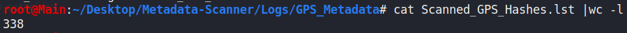
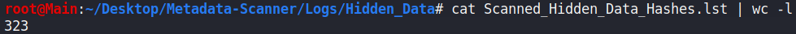

Metadata in Pictures Scan
Metadata Scanner Script:
Using 2 scripts that i built in Bash:
One for downloading images recursively, and the other to scan the downloaded images for any metadata.
Downloading images using `wget`
wget -e robots=off -nd -r --mirror --no-cookies --level=inf --no-check-certificate --no-cache -T 30 --ignore-length -np -P $DOWNLOADEDIMAGES
-A jpeg,jpg,bmp,gif,png,webp,exif,tiff,webp,heif,bat $FULLURL
:
→ It downloads recursivley with infinite level of depth.
→ Allows only images file extensions to be downloaded,
→ Saves to a directory which the scan will preform on.
Scan files with `exiftool` and `binwalk`. (exiftool tries to grep for GPS metadata)
→ Scans with the above tools.
→ Logs sha256 hashes of files that it had scanned.
→ Saves any suspicious files (files with hidden data from binwalk or GPS metadata that exiftool found) to a directory for further analysis.
→ Removes images that has it's hashes stored in the hash256 log file before scan starts.
Findings:
As of writing this report at: 02/02/2021 - 19:34
exiftool and
binwalk scanned
~
330 images that were downloaded from armholding.ae/.
→
binwalk found some false-positivies as the script not fully optimized.
Attached: hashes of the scanned files:
  Conclusion:
No hidden data nor GPS metadata was found in images stored in the website.